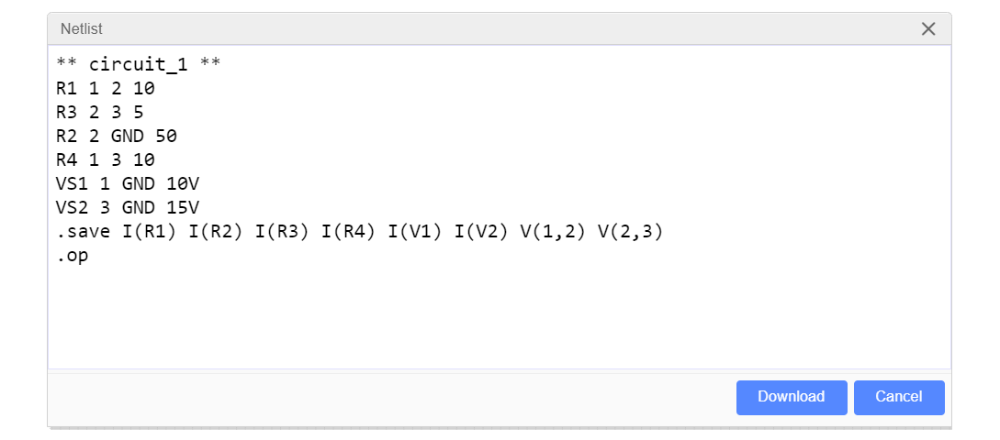

การวิเคราะห์วงจรไฟฟ้ากระแสตรงด้วยวิธีโหนดและเมชพร้อมตัวอย่างโค้ด Python#
บทความนี้กล่าวถึง วิธีการวิเคราะห์วงจรไฟฟ้ากระแสตรงที่มีพื้นฐานมาจากกฎของเคอร์ชอฟฟ์ (Kirchhoff’s Laws) การใช้ซอฟต์แวร์เช่น EasyEDA และการเขียนโค้ด Python เพื่อช่วยในการวิเคราะห์และคำนวณค่าตัวเลข
Keywords: DC Circuit Analysis, EasyEDA, Python
▷ ทฤษฎีพื้นฐานในการวิเคราะห์วงจรไฟฟ้า#
วงจรไฟฟ้า (Electric Circuit) เป็นการเชื่อมต่อกันระหว่างองค์ประกอบทางไฟฟ้า (เรียกว่า Circuit Element หรือ Circuit Component) เช่น แหล่งจ่ายพลังงานไฟฟ้า (Electrical Source) และ โหลดไฟฟ้า (Electric Load) อย่างเช่น ตัวต้านทาน (Resistor) เป็นต้น การนำมาต่อเข้าด้วยกันแล้วทำให้ครบวงจร จะทำให้มีการเคลื่อนที่ของประจุไฟฟ้าหรือมีกระแสไฟฟ้าไหลในวงจร
ในการเรียนรู้เกี่ยวกับทฤษฎีวงจรไฟฟ้าพื้นฐาน ก็มักจะเริ่มต้นด้วยการวิเคราะห์วงจรที่ประกอบตัวต้านทาน อย่างน้อยหนึ่งตัว (เรียกวงจรประเภทนี้ว่า Resistive Circuit) และมีแหล่งจ่ายไฟฟ้ากระแสตรง (DC Source) เป็นแบบอิสระและคงที่ (Constant Independent Source) เช่น
- แหล่งจ่ายแรงดันไฟฟ้าคงที่ (Constant Voltage Source): แรงดันตกคร่อมที่แหล่งจ่ายประเภทนี้ในทางอุดมคติ จะต้องคงที่และไม่ขึ้นอยู่กับกระแสที่ไหลผ่านแหล่งจ่าย
- แหล่งจ่ายกระแสไฟฟ้าคงที่ (Constant Current Source): กระแสไฟฟ้าที่เกิดจากแหล่งจ่ายประเภทนี้ในทางอุดมคติ จะต้องคงที่และไม่ขึ้นอยู่แรงดันไฟฟ้าตกคร่อมที่เกิดขึ้นกับแหล่งจ่าย
ทฤษฎีทางวงจรไฟฟ้าที่ได้มีการนำมาใช้วิเคราะห์วงจรพื้นฐานได้แก่ กฎของโอห์ม (Ohm's Law) และกฎของเคอร์ชอฟฟ์ (Kirchhoff's Laws)
กฎของเคอร์ชอฟฟ์ แบ่งเป็นสองข้อคือ กฎกระแสไฟฟ้า (Kirchhoff’s Current Law: KCL) และกฎแรงดันไฟฟ้า (Kirchhoff's Voltage Law: KVL)
- KCL: "กระแสไฟฟ้าที่ไหลเข้าจุดใดจุดหนึ่งในวงจรไฟฟ้า จะเท่ากับกระแสไฟฟ้าที่ไหลออกจากจุดนั้น"
- KVL: "ผลรวมทางพีชคณิตของแรงดันไฟฟ้าภายในวงจรปิดใด ๆ หรือที่เรียกว่า "เมช" (Mesh) หรือ ลูป (Loop) มีค่าเท่ากับศูนย์"
- ลูป (Loop) ในวงจรไฟฟ้า หมายถึง เส้นทางใด ๆ ในวงจรไฟฟ้าที่เริ่มจากจุดเริ่มต้นไปตามเส้นทางแล้วนำกลับมายังจุดเริ่มต้นได้
- เมช (Mesh) ในวงจรไฟฟ้า หมายถึง ลูปที่ไม่มีลูปอื่นรวมอยู่ภายใน หรือไม่สามารถแบ่งออกเป็นลูปย่อยได้
▷ วิธีการวิเคราะห์วงจร: Mesh Current Method#
วิธีการนี้มีชื่อว่า Mesh Current Method หรือ Mesh Analysis Method โดยอาศัยกฎแรงดันไฟฟ้าของเคอร์ชอฟฟ์ (KVL) เป็นพื้นฐานสำคัญในการวิเคราะห์
ขั้นตอนการวิเคราะห์วงจร
- ระบุเมชในวงจรทั้งหมด (บางกรณีก็ใช้ลูปแทนได้) แล้ววาดรูปกระแสของเมช และกำหนดทิศทางของกระแสดังกล่าว (Mesh Currents) เช่น ให้วนไปตามเข็มนาฬิกาเหมือนกันทั้งหมด และระบุชื่อกระแสของเมชเป็น สำหรับ
- หากว่ามีกระแสของเมช ไหลผ่านแหล่งจ่ายกระแสคงที่ ก็จะทราบค่าของกระแสนั้น (สังเกตทิศทางของกระแสจากแหล่งจ่าย)
- เขียนสมการสำหรับทุกเมชโดยใช้ KVL โดยมีตัวแปรที่ไม่ทราบค่า (Unknown Variables) เป็นกระแส ซึ่งจะต้องมีจำนวนของสมการเท่ากับจำนวนของตัวแปร
- แก้ระบบสมการเชิงเส้นที่ได้จากข้อที่ 3 เพื่อหาค่าของกระแส
- เมื่อทราบปริมาณและทิศทางของกระแสที่ไหลผ่านตัวต้านทานแล้ว ก็สามารถทราบแรงดันตกคร่อมของตัวต้านทานแต่ละตัวได้โดยใช้กฎของโอห์ม
ข้อสังเกต: วิธีนี้เรียกว่า Mesh Current Method ก็เพราะว่า เราจะต้องการจะหาปริมาณกระแสของเมชในวงจร
▷ วิธีการวิเคราะห์วงจร: Node Voltage Method#
วิธีการนี้มีชื่อว่า Node Voltage Method หรือ Nodal Analysis Method โดยอาศัยกฎกระแสไฟฟ้าของเคอร์ชอฟฟ์ (KCL) เป็นพื้นฐานสำคัญในการวิเคราะห์ และวิธีนี้เหมาะสำหรับการคำนวณด้วยคอมพิวเตอร์ (โปรแกรมประเภท SPICE circuit simulator นิยมใช้วิธีที่เรียกว่า Modified Nodal Analysis: MNA)
ขั้นตอนการวิเคราะห์วงจร
- สร้างจุดอ้างอิงในวงจร โดยทั่วไปก็คือ กราวด์ (Ground: GND) ของวงจร ซึ่งมีแรงดันไฟฟ้าเป็น 0V
- ตั้งชื่อโหนด (Node) ในวงจร แล้วใช้สัญลักษณ์ สำหรับ เป็นแรงดันไฟฟ้าที่โหนดดังกล่าว
- ถ้าเป็นแหล่งจ่ายแรงดันคงที่ หากมีด้านหนึ่งต่อกับ และอีกด้านหนึ่งต่อกับ ก็จะได้เงื่อนไขที่ระบุว่า ผลต่างของแรงดันไฟฟ้าทั้งสองโหนดจะต้องเท่ากับแรงดันไฟฟ้าของแหล่งจ่าย (สังเกตทิศทางของขั้วบวกและลบด้วย)
- สร้างสมการโดยใช้ KCL สำหรับกระแสที่ไหลระหว่างสองโหนดใด ๆ ในวงจร
- แก้ระบบสมการเชิงเส้นที่ได้จากข้อ 4. เพื่อหาค่าของแรงดันไฟฟ้าที่โหนดต่าง ๆ ในวงจร
- สามารถหากระแสที่ไหลผ่านตัวต้านทานได้ โดยใช้กฎของโอห์ม
▷ ตัวอย่างที่ 1: การวิเคราะห์วงจรด้วย Mesh Current Method#
จากรูปของผังวงจรตัวอย่างต่อไปนี้ จะเห็นได้ว่า มีแหล่งจ่ายแรงดันคงที่ และ และมีตัวต้านทาน
รูป: ผังวงจร
รูป: ผังวงจรที่มีการกำหนดเมชและกระแสในวงจร
ในการวิเคราะห์วงจรได้มีการแบ่งออกเป็นสามเมช และมีการตั้งชื่อกระแสไฟฟ้าและทิศทางในแต่ละเมช ให้เป็น ตามลำดับ จากรูปจะเห็นได้ว่า
- กระแสที่ไหลผ่าน เกี่ยวข้องกับ และ ซึ่งจะได้เท่ากับ
- กระแสที่ไหลผ่าน เกี่ยวข้องกับ และ ซึ่งจะได้เท่ากับ
- กระแสที่ไหลผ่าน เกี่ยวข้องกับ และ ซึ่งจะได้เท่ากับ
- กระแสที่ไหลผ่าน เกี่ยวข้องกับ เท่านั้น
การเขียนสมการโดยใช้ KVL สำหรับวงจรนี้เป็นดังนี้
จัดรูปใหม่ให้อยู่ในรูปของสมการเมทริกซ์
ถ้าลองแทนค่าตัวเลขสำหรับพารามิเตอร์ต่าง ๆ ในวงจร เป็นตัวอย่างเช่น
เมื่อนำไปใช้ในการหาผลเฉลยของระบบสมการเชิงเส้นด้วยวิธีการทางคณิตศาสตร์ จะสามารถคำนวณกระแสของเมชได้ดังนี้
ดังนั้นเราจะสรุปได้ว่า มีกระแสที่ไหลผ่านตัวต้านทานในวงจรดังนี้ โดยได้กำหนดทิศทางการไหลของกระแส ให้สอดคล้องกับรายการ SPICE netlist เพื่อจะได้นำไปเปรียบเทียบกับผลการวิเคราะห์วงจรด้วยซอฟต์แวร์ EasyEDA/LTspice
- กระแส
- กระแส
- กระแส
- กระแส
- กระแส เท่ากับ
- กระแส เท่ากับ
▷ ตัวอย่างที่ 2: การวิเคราะห์วงจรด้วย Node Voltage Method#
จากรูปผังวงจรเหมือนในตัวอย่างที่ 1 เราสามารถเขียนสมการด้วยการวิเคราะห์แบบ KCL ได้ดังนี้
ในตัวอย่างนี้ และ เป็นพารามิเตอร์ของวงจรและเป็นค่าคงที่ เนื่องจากถูกกำหนดค่าโดยแหล่งจ่าย และ ตามลำดับ ดังนั้นจึงเขียนสมการใหม่สำหรับแรงดันของโหนดต่าง ๆ ได้ดังนี้
ถ้าแทนค่าตัวเลขสำหรับพารามิเตอร์ต่าง ๆ ในวงจร เหมือนในตัวอย่างที่ 1
จะได้ และสามารถหากระแสที่ไหลผ่านตัวต้านทานได้ดังนี้
และคำนวณกระแสที่ไหลผ่านแหล่งจ่ายได้ดังนี้
▷ ตัวอย่างที่ 3: การวิเคราะห์วงจรด้วยซอฟต์แวร์ EasyEDA#
ถัดไปเรามาลองดูตัวอย่างการใช้ซอฟต์แวร์ EasyEDA เพื่อวาดผังวงจรและวิเคราะห์การทำงานของวงจรเหมือนในตัวอย่างที่ 1 และ 2
รูป: ผังวงจรที่มีการแสดงค่าตัวเลขสำหรับพารามิเตอร์ของวงจร
SPICE netlist แสดงให้เห็นรายการอุปกรณ์และการเชื่อมต่อขาอุปกรณ์ และหมายเลขของโหนด

รูป: แสดงรายการ SPICE netlist ของวงจร
รูป: ผลการวิเคราะห์การทำงานของวงจรในโหมด DC operating point (.op)
ค่าตัวเลขที่ได้จากการวิเคราะห์วงจร
- V(1) = แรงดันไฟฟ้าที่จุดหมายเลข 1 ในวงจร ได้เท่ากับ +10.0V
- V(2) = แรงดันไฟฟ้าที่จุดหมายเลข 2 ในวงจร ได้เท่ากับ +12.5V
- V(3) = แรงดันไฟฟ้าที่จุดหมายเลข 3 ในวงจร ได้เท่ากับ +15.0V
- I(R1) = กระแสที่ไหลผ่านตัวต้านทาน R1 ได้เท่ากับ -0.25A
- I(R2) = กระแสที่ไหลผ่านตัวต้านทาน R2 ได้เท่ากับ +0.25A
- I(R3) = กระแสที่ไหลผ่านตัวต้านทาน R3 ได้เท่ากับ -0.5A
- I(R4) = กระแสที่ไหลผ่านตัวต้านทาน R4 ได้เท่ากับ -0.5A
- I(VS1) = กระแสที่ไหลผ่านแหล่งจ่ายแรงดันไฟฟ้าคงที่ VS1 ได้เท่ากับ +0.75A
- I(VS2) = กระแสที่ไหลผ่านแหล่งจ่ายแรงดันไฟฟ้าคงที่ VS2 ได้เท่ากับ -1.0A
ข้อสังเกต: SPICE Circuit Simulator จะคำนวณปริมาณกระแสไฟฟ้าที่ไหลผ่านตัวต้านทานหรือแหล่งจ่ายแรงดันไฟฟ้า โดยมีทิศทางจากปลายด้านที่หนึ่งไปยังปลายอีกด้านหนึ่งของอุปกรณ์ตามลำดับ ดังนั้นจึงควรเปรียบเทียบและอ้างอิงกับ SPICE netlist ของวงจร
- ทิศทางของ I(R1) จากจุด 1 ไปยังจุด 2
- ทิศทางของ I(R2) จากจุด 2 ไปยังจุด 0
- ทิศทางของ I(R3) จากจุด 2 ไปยังจุด 3
- ทิศทางของ I(R4) จากจุด 1 ไปยังจุด 3
- ทิศทางของ I(VS1) และ I(VS2) จากขั้วบวกไปยังขั้วลบของแหล่งจ่ายแต่ละตัว
รูป: การวัดกระแสในวงจรด้วยมัลติมิเตอร์ (แอมมิเตอร์)
ข้อสังเกต: หากกระแสไหลเข้าแอมมิเตอร์ในทิศทางจากขั้วบวกไปยังขั้วลบ ค่าตัวเลขสำหรับปริมาณกระแสจะเป็นบวก แต่ถ้าไหลในทิศทางตรงกันข้าม จะได้ค่าตัวเลขเป็นลบ
▷ ตัวอย่างที่ 4: โค้ด Python เพื่อช่วยในการวิเคราะห์วงจร#
เราสามารถเขียนโปรแกรมด้วยภาษา Python และใช้โมดูล SymPy เพื่อประมวลผลเชิงสัญลักษณ์ในทางคณิตศาสตร์ได้ โดยมีขั้นตอนดังนี้
- ประกาศตัวแปรที่เป็นสัญลักษณ์ (Symbols) สำหรับพารามิเตอร์ต่าง ๆ ของวงจร
- สร้างสมการซึ่งได้จากวิธี Nodal Analysis หรือ Mesh Analysis
- แทนค่าตัวเลขสำหรับพารามิเตอร์ของวงจร
- แก้ระบบสมการ
ตัวอย่างโค้ด Python (สำหรับนำไปใช้กับ JupyterLab) เพื่อหาค่ากระแสของเมชเพื่อเปรียบเทียบกับผลการวิเคราะห์ในตัวอย่างที่ 1
from sympy import *
from IPython.display import display, Math
# declare symbols for circuit parameters
R1,R2,R3,R4 = symbols("R_1 R_2 R_3 R_4")
VS1,VS2,I1,I2,I3 = symbols("V_S1 V_S2 I_1 I_2 I_3")
# write equations resulting from mesh analysis
eq1 = Eq(-VS1 + R1*(I1-I3) - R2*(-I1+I2), 0)
eq2 = Eq( R2*(-I1+I2) + R3*(I2-I3) + VS2, 0)
eq3 = Eq( R4*(I3) - R1*(I1-I3) - R3*(I2-I3), 0)
# create a list of equations
eqs = [eq1, eq2, eq3]
# create a list of unknown variables
Is = [I1,I2,I3]
# display equations
for eq in eqs:
display( factor(eq,Is) )
# rewrite the equation system as A*x = b
# use sympy.solvers.solveset.linear_eq_to_matrix()
A,b = linear_eq_to_matrix( eqs, Is )
# show the matrix A and the vector b
display( Math('A = ' + latex(A)) )
display( Math('b = ' + latex(b)) )
#
# substitute circuit parameters with specific values
params = {VS1:10,VS2:15,R1:10,R2:50,R3:5,R4:10}
eqn = [eq.subs(params) for eq in eqs]
#
# Method 1) use sympy.solvers.solvers.solve()
sol = solve( eqn, Is )
ltx = ''
for I_i,expr in sol.items():
ltx += latex(I_i) + '=' + latex(expr) + ','
# show mesh currents (in Amperes)
display( Math(ltx[:-1] ) )
#
# Method 2)
# create the augmented matrix A|b
A,b = linear_eq_to_matrix( eqn, Is )
A_aug = A.row_join(b)
sol = solve_linear_system( A_aug, *Is )
ltx = ''
for I_i,expr in sol.items():
ltx += latex(I_i) + '=' + latex(float(expr)) + ','
# show mesh currents (in Amperes)
display( Math(ltx[:-1]) )
รูป: ตัวอย่างการใช้ JupyterLab เพื่อสร้างรันโค้ด Python
รูป: ตัวอย่างเอาต์พุตที่แสดงระบบสมการและรูปของเมทริกซ์และเวกเตอร์ที่เกี่ยวข้อง
▷ ตัวอย่างที่ 5: การวิเคราะห์วงจรด้วยวิธี Nodal Analysis#
วงจรถัดไปมีความซับซ้อนมากกว่าวงจรในตัวอย่างที่ 1 และ 2 และจะเห็นได้ว่า มีองค์ประกอบดังนี้
- ตัวต้านทาน
- แหล่งจ่ายแรงดันไฟฟ้าคงที่ และ
- แหล่งจ่ายกระแสไฟฟ้าคงที่ และ
รูป: ผังวงจรสำหรับตัวอย่างที่ 3
การวิเคราะห์วงจรโดยใช้วิธี (Modified) Nodal Analysis มีดังนี้
และมีข้อสังเกตว่า
- สมการ ได้จากการวิเคราะห์ด้วย KCL
- สมการ ได้จากแรงดันตกคร่อมที่ขั้วบวกและลบของแหล่งจ่ายคงที่ และ ตามลำดับ
- ระหว่างโหนด 2 กับ 0 เป็นแหล่งจ่ายแรงดันคงที่ และได้ผลต่างเท่ากับ
- ระหว่างโหนด 5 กับ 4 เป็นแหล่งจ่ายแรงดันคงที่ และได้ผลต่างเท่ากับ
รูป: แสดง SPICE netlist ของวงจรเมื่อวาดผังวงจรโดยใช้ EasyEDA
ในการวิเคราะห์วงจรและคำนวณค่าตัวเลขเป็นตัวอย่าง ได้กำหนดค่าสำหรับพารามิเตอร์ของวงจรดังนี้
จากผลการวิเคราะห์วงจรด้วย EasyEDA / LTSpice (ดูผลจาก Simulation Results) จะได้แรงดันของโหนดตามหมายเลข เป็นค่าตัวเลขดังนี้
- V(1) = 3V
- V(2) = 10V
- V(3) = 18V
- V(4) = 11V
- V(5) = 16V
- V(6) = 17V
และกระแสที่ไหลผ่านตัวต้านทาน ตามลำดับ จะได้ค่าตัวเลข (ค่าประมาณ) ดังนี้
- I(R1) = +0.2A เมื่อกำหนดทิศทางจากโหนด 4 ไปยัง 2
- I(R2) = -0.8A เมื่อกำหนดทิศทางจากโหนด 2 ไปยัง 3
- I(R3) = -0.2A เมื่อกำหนดทิศทางจากโหนด 6 ไปยัง 5
- I(R4) = -0.1A เมื่อกำหนดทิศทางจากโหนด 6 ไปยัง 3
- I(R5) = +1.0A เมื่อกำหนดทิศทางจากโหนด 1 ไปยัง 0
- I(R6) = -0.1A เมื่อกำหนดทิศทางจากโหนด 6 ไปยัง 3
รูป: ผลการวิเคราะห์ปริมาณทางไฟฟ้าในวงจรโดยใช้ EasyEDA / LTspice
▷ ตัวอย่างที่ 6: โค้ด Python เพื่อช่วยในการวิเคราะห์วงจร#
เมื่อได้ระบบสมการเชิงเส้นจากตัวอย่างที่ 5 และมีจำนวนสมการเท่ากับจำนวนของแรงดันไฟฟ้าของโหนด ถัดไปตัวอย่างการเขียนโค้ด Python เพื่อแสดงสมการในรูปของเมทริกซ์และเวกเตอร์ และคำนวณค่าตัวเลขที่เป็นผลเฉลยของระบบสมการเชิงเส้น
from sympy import *
from IPython.display import display, Math
# declare symbols for circuit parameters
R1,R2,R3,R4,R5,R6 = symbols("R_1 R_2 R_3 R_4 R_5 R_6")
VS1,VS2,IS1,IS2 = symbols("V_S1 V_S2 I_S1 I_S2")
V1,V2,V3,V4,V5,V6 = symbols("V_1 V_2 V_3 V_4 V_5 V_6")
# write the equations derived from Modified Nodal Analysis
eqs = [
Eq( (V2-V3)/R2, (V3-V6)/R4 + IS1 + (V3-V6)/R6 - IS2 ),
Eq( (V2-V4)/R1, (V5-V6)/R3 ),
Eq( (V5-V6)/R3, (V6-V3)/R4 + (V6-V3)/R6 ),
Eq( V1/R5, IS1 ),
Eq( V2, VS1 ),
Eq( V5-V4, VS2 ) ]
# define a list of unknown variables
Vs = [V1,V2,V3,V4,V5,V6]
#
# rewrite the equation system as A*x = b
# use sympy.solvers.solveset.linear_eq_to_matrix()
A,b = linear_eq_to_matrix( eqs, Vs )
# show the matrix A
display( Math('A = ' + latex(A)) )
# show the vector b (in transpose form)
display( Math('b = ' + latex(b)) )
#
# substitute circuit paramaters with specific values
params = {VS1:10,VS2:5,IS1:1,IS2:2}
params.update( {R1:5,R2:10,R3:5,R4:10,R5:3,R6:10} )
eqn = [eq.subs(params) for eq in eqs]
#
# solve the linear equation system to find the solution
sol = solve( eqn, Vs )
#
# display the node voltages sorted by names
Vs = dict()
for k in sol.keys():
value = float(sol[k])
Vs.update( {str(k): '{:.1f}'.format(value)} )
for v_i,value in sorted(Vs.items()):
display( Math(v_i + '=' + value + ' V') )
รูป: เมทริกซ์และเวกเตอร์ที่ได้จากระบบสมการเชิงเส้น
▷ กล่าวสรุป#
บทความนี้นำเสนอการวิธีการวิเคราะห์วงจรไฟฟ้ากระแสตรง และเปรียบเทียบกับผลการวิเคราะห์การทำงานของวงจร โดยใช้ซอฟต์แวร์ EasyEDA และมีตัวอย่างการเขียนโค้ด Python โดยใช้โมดูล SymPy เพื่อช่วยคำนวณและหาคำตอบของระบบสมการเชิงเส้น
This work is licensed under a Creative Commons Attribution-ShareAlike 4.0 International License.
Created: 2022-05-03 | Last Updated: 2022-05-04